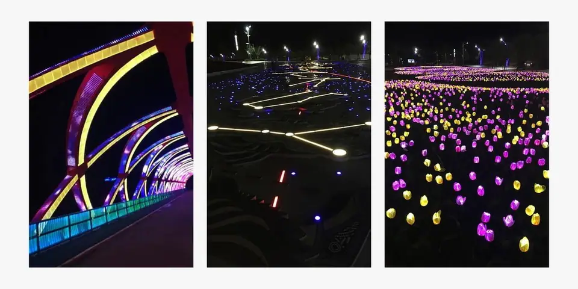
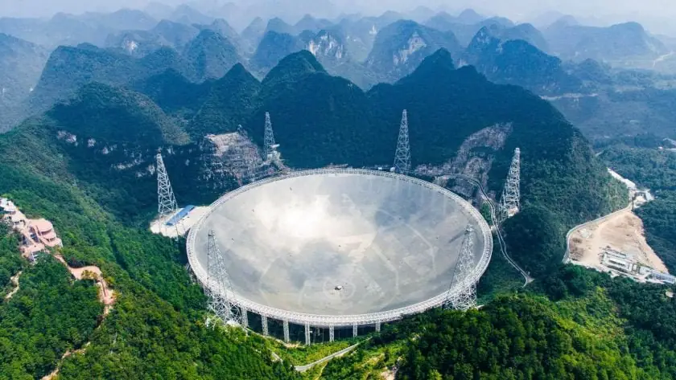
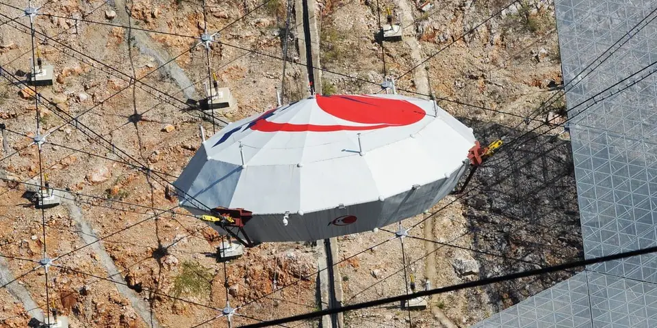
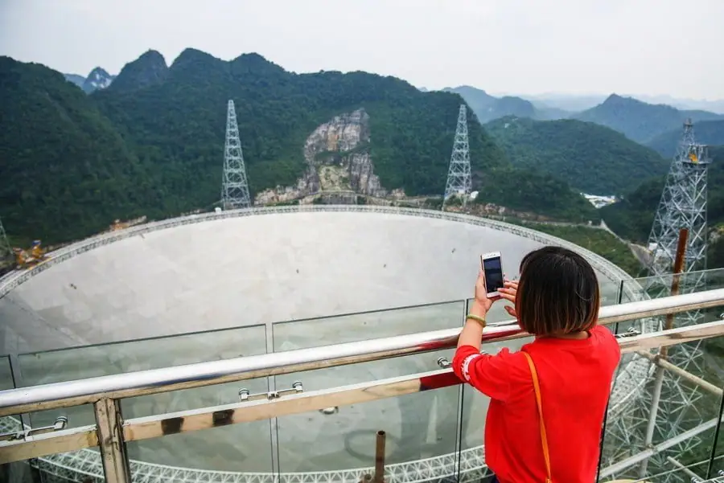
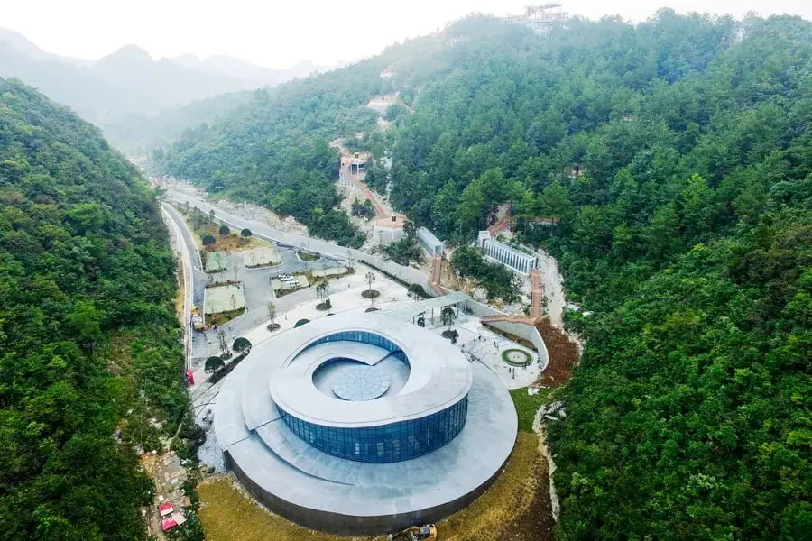
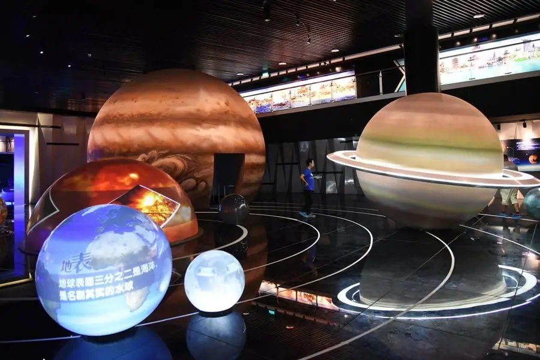

Articles ·
CHINA BUILT THE WORLD’S LARGEST TELESCOPE. THEN CAME THE TOURISTS
Thousands of people moved to let China build and protect the world’s largest telescope. And then the government drew in orders of magnitude more tourists, potentially undercutting its own science in an attempt to promote it.
“I HOPE WE go inside this golf ball,” Sabrina Stierwalt joked as she and a group of other radio astronomers approached what did, in fact, appear to be a giant golf ball in the middle of China’s new Pingtang Astronomy Town.
STIERWALT WAS A little drunk, a lot full, even more tired. The nighttime scene felt surreal. But then again, even a sober, well-rested person might struggle to make sense of this cosmos-themed, touristy confection of a metropolis.
On the group’s walk around town that night, they seemed to traverse the ever-expanding universe. Light from a Saturn-shaped lamp crested and receded, its rings locked into support pillars that appeared to make it levitate. Stierwalt stepped onto a sidewalk, and its panels lit up beneath her feet, leaving a trail of lights behind her like the tail of a meteor. Someone had even brought constellations down to Earth, linking together lights in the ground to match the patterns in the sky.

The day before, Stierwalt had traveled from Southern California to Pingtang Astronomy Town for a conference hosted by scientists from the world’s largest telescope. It was a new designation: China’s Five-Hundred-Meter Aperture Spherical Radio Telescope, or FAST, had been completed just a year before, in September 2016. Wandering, tipsy, around this shrine to the stars, the 40 or so other foreign astronomers had come to China to collaborate on the superlative-snatching instrument.
For now, though, they wouldn’t get to see the telescope itself, nestled in a natural enclosure called a karst depression about 10 miles away. First things first: the golf ball.
As the group got closer, they saw a red carpet unrolled into the entrance of the giant white orb, guarded by iridescent dragons on an inflatable arch. Inside, they buckled up in rows of molded yellow plastic chairs. The lights dimmed. It was an IMAX movie—a cartoon, with an animated narrator. Not the likeness of a person but … what was it? A soup bowl?
No, Stierwalt realized. It was a clip-art version of the gargantuan telescope itself. Small cartoon FAST flew around big cartoon FAST, describing the monumental feat of engineering just over yonder: a giant geodesic dome shaped out of 4,450 triangular panels, above which receivers collect radio waves from astronomical objects.

It is, in some sense, an experiment into whether this type of science and economic development can coexist. Which is strange, because normally, they purposefully don’t.
The point of radio telescopes is to sense radio waves from space—gas clouds, galaxies, quasars. By the time those celestial objects’ emissions reach Earth, they’ve dimmed to near-nothingness, so astronomers build these gigantic dishes to pick up the faint signals. But their size makes them particularly sensitive to all radio waves, including those from cell phones, satellites, radar systems, spark plugs, microwaves, Wi-Fi, short circuits, and basically anything else that uses electricity or communicates. Protection against radio-frequency interference, or RFI, is why scientists put their radio telescopes in remote locations: the mountains of West Virginia, the deserts of Chile, the way-outback of Australia.
FAST’s site used to be remote like that. The country even forcibly relocated thousands of villagers who lived nearby, so their modern trappings wouldn’t interfere with the new prized instrument.
But then, paradoxically, the government built—just a few miles from the displaced villagers’ demolished houses—this astronomy town. It also plans to increase the permanent population by hundreds of thousands. That’s a lot of cell phones, each of which persistently emits radio waves with around 1 watt of power.
By the time certain deep-space emissions reach Earth, their power often comes with 24+ zeroes in front: 0.0000000000000000000000001 watts.
FAST HAS BEEN in the making for a long time. In the early 2000s, China angled to host the Square Kilometre Array, a collection of coordinated radio antennas whose dishes would be scattered over thousands of miles. But in 2006, the international SKA committee dismissed China, and then chose to set up its distributed mondo-telescope in South Africa and Australia instead.Undeterred, Chinese astronomers set out to build their own powerful instrument.In 2007, China’s National Development and Reform Commission allocated $90 million for the project, with $90 million more streaming in from other agencies. Four years later, construction began in one of China’s poorest regions, in the karst hills of the southwestern part of the country. They do things fast in China: The team finished the telescope in just five years. In September 2016, FAST received its “first light,” from a pulsar 1,351 light-years away, during its official opening.A year later, Stierwalt and the other visiting scientists arrived in Pingtang, and after an evening of touring Astronomy Town, they got down to business.
See, FAST’s opening had been more ceremony than science (the commissioning phase is officially scheduled to end by September 2019). It was still far from fully operational—engineers are still trying to perfect, for instance, the motors that push and pull its surface into shape, allowing it to point and focus correctly. And the relatively new crop of radio astronomers running the telescope were hungry for advice about how to run such a massive research instrument.The visiting astronomers had worked with telescopes that have contributed to understanding of hydrogen emissions, pulsars, powerful bursts, and distant galaxies. But they weren’t just subject experts: Many were logistical wizards, having worked on multiple instruments and large surveys, and with substantial and dispersed teams. Stierwalt studies interacting dwarf galaxies, and while she’s a staff scientist at Caltech/IPAC, she uses telescopes all over. “Each gives a different piece of the puzzle,” she says. Optical telescopes show the stars. Infrared instruments reveal dust and older stars. X-ray observatories pick out black holes. And single-dish radio telescopes like FAST see the bigger picture: They can map out the gas inside of and surrounding galaxies.
So at the Radio Astronomy Conference, Stierwalt and the other visitors shared how FAST could benefit from their instruments, and vice versa, and talked about how to run big projects. That work had begun even before the participants arrived. “Prior to the meeting, I traveled extensively all over the world to personally meet with the leaders of previous large surveys,” says Marko Krčo, a research fellow who’s been working for the Chinese Academy of Sciences since the summer of 2016.
He asked the meeting’s speakers, some of those same leaders, to talk about what had gone wrong in their own surveys, and how the interpersonal end had functioned. “How did you organize yourselves?” he says. “How did you work together? How did you communicate?”
That kind of feedback would be especially important for FAST to accomplish one of its first, appropriately lofty goals: helping astronomers collect signals from many sides of the universe, all at once. They’d call it the Commensal Radio Astronomy FAST Survey, or CRAFTS.

But it’s not easy. Pulsar astronomers want quicktime samples at a wide range of frequencies; hydrogen studiers, meanwhile, don’t need data chunks as often, but they care deeply about the granular frequency details. On top of that, each group adjusts the observations, calibrating them, kind of like you’d make sure your speedometer reads 45 mph when you’re going 45. And they use different kinds of adjustments.
When we spoke, Krčo had just returned from a trip to Green Bank, where he was testing whether they could set everyone’s speedometer correctly. “I think it will be one of the big sort of legacies of FAST,” says Krčo. And it’s especially important since the National Science Foundation has recently cratered funding to both Arecibo and Green Bank observatories, the United States’ most significant single-dish radio telescopes. While they remain open, they have to seek private project money, meaning chunks of time are no longer available for astronomers’ proposals. Adding hours, on a different continent, helps everybody.
At the end of the conference in Pingtang County, Krčo and his colleagues presented a concrete plan for CRAFTS, giving all the visitors a chance to approve the proposed design. “Each group could raise any red flags, if necessary, regarding their individual science goals or suggest modifications,” says Krčo.
In addition to the CRAFTS receiver, Krčo says they’ll add six more, sensitive to different frequencies. Together, they will detect radio waves from 70 megahertz to 3 gigahertz. He says they’ll find thousands of new pulsars (as of July 2018, they had already found more than 40), and do detailed studies of hydrogen inside the galaxy and in the wider universe, among numerous other worthy scientific goals.
“There’s just a hell of a lot of work to do to get there,” says Krčo. “But we’re doing it.”
For FAST to fulfill its potential, though, Krčo and his colleagues won’t just have to solve engineering problems: They’ll also have to deal with the problems that engineering created.
DURING THE FOUR-DAY Radio Astronomy Forum, Stierwalt and the other astronomers did, finally, get to see the actual telescope, taking a bus up a tight, tortuous road through the karst between town and telescope.As soon as they arrived on site, they were instructed to shut down their phones to protect the instrument from the radio frequency interference. But not even these astronomers, who want pristine FAST data for themselves, could resist pressing that capture button. “Our sweet, sweet tour guide continually reminded us to please turn off our phones,” says Stierwalt, “but we all kept taking pictures and sneaking them out because no one really seemed to care.” Come on: It’s the world’s largest telescope.Maybe their minder stayed lax because a burst here or there wouldn’t make much of a difference in those early days. The number of regular tourists allowed at the site all day is capped at 3,000, to limit RFI, and they have to put their phones in lockers before they go see the dish. Krčo says the site bumps up against the visitor limit most days.
But tourism and development are complicated for a sensitive scientific instrument. Within three miles of the telescope, the government passed legislation establishing a “radio-quiet zone,” where RFI-emitting devices are severely restricted. No one (not cellular providers or radio broadcasters) can get a transmitting license, and people entering the facility itself will have their electronics confiscated. “No one lives inside the zone, and the area is not open to the general public,” says Krčo, although some with commercial interests, like local farmers, can enter the zone with special permission. The government relocated villagers who lived within that protected area with promises of repayment in cash, housing, and jobs in tourism and FAST support services. (Though a 2016 report in Agence France-Presse revealed that up to 500 relocated families were suing the Pingtang government, alleging “land grabs without compensation, forced demolitions and unlawful detentions.”)
The country’s Civil Aviation Administration has also adjusted air travel, setting up two restricted flight zones near the scope, canceling two routes, and adding or adjusting three others. “We can still see some RFI from aircraft navigational beacons,” says Krčo. “It’s much less, though, compared to what it’d look like without the adjusted air routes. It’d be impossible to fully clear a large enough air space to create a completely quiet sky.”
None of the invisible boundaries, after all, function like force fields. RFI that originates from beyond can pass right on through. At least at the five-star tourist hotel, around 10 miles away, there’s Wi-Fi. The tour center, says an American pulsar astronomer, has a direct line of sight to the telescope.

One day, he woke up to a new five-story structure out his window. Couldn’t be, he thought. But he checked a picture he’d taken the day before, and, sure enough, there had been no building in that spot.
The corn close to town was covered in construction dust. “I’ve never seen anything like that in my whole life,” says Krčo. Today, though, the corn is gone, covered instead in hotels, museums, and shopping centers.


At a press conference in March 2017, Guizhou’s governor declared that the province would build 10,000 kilometers of new highway by 2020, in addition to completing 17 airports and 4,000 kilometers of high-speed train lines. That’s partly to accommodate the hundreds of thousands of people the province expects to relocate here permanently, as well as the tourists. While just those 3,000 people per day will get to visit the telescope itself, there’s no cap on how many can sojourn in Astronomy Town; the deputy director of Guizhou’s reform and development commission, according to China Daily, said it would be “a main astronomical tourism zone worldwide.” “The town has grown incredibly over the last couple of years due to tourism development,” says Krčo. “This has impacted our RFI environment, but not yet to a point where it is unmanageable.”
Krčo says that geography protects FAST against much of that human interference. “There are a great many mountains between the telescope and the town,” says Krčo. The land blocks the waves, which you’ve seen yourself if you’ve ever tried to pick up NPR in a canyon. But even though the waves can’t go directly into the telescope, Krčo says the team still sees their echoes, reflections beamed down from the atmosphere.
“People at the visitors’ center have been using cameras and whatnot, and we can see the RFI from that,” he said last November (enforcement seems to have ramped up since then). “During the daytime,” he adds, “our RFI is much worse than nighttime,” largely due to engineers working onsite (that should improve once commissioning is over). But the tourist traps aren’t run and weren’t developed by FAST staff but by various governmental arms—so FAST, really, has no control over what they do.
The global radio astronomy community has concerns. “I’m absolutely sure that if people are going to bring their toys, then there’s going to be RFI,” says Carla Beaudet, an RFI engineer at Green Bank Observatory, who spends her career trying to help humans see the radio sky despite themselves. Green Bank itself sits in the middle of a strict radio protection zone with a radius of 10 miles, in which there’s no Wi-Fi or even microwaves.
There are other ways of dealing with RFI—and Krčo says FAST has a permanent team of engineers dedicated to dealing with interference. One solution, which can pick up the strongest contamination, is a small antenna mounted to one of FAST’s support towers. “The idea is that it will observe the same RFI as the big dish,” says Krčo. “Then, in principle, we can remove the RFI from the data in real time.”
At other telescopes, astronomers are developing machine-learning algorithms that could identify, extract, and compensate for dirty data. Alltelescopes, after all, have human contamination, even the ones without malls next door. You can’t stop a communications satellite from passing overhead, or a radar beam from bouncing the wrong way across the mountains. And while you can decide not to build a tourist town in the first place, you probably can’t stop a tidal wave of construction once it’s crested.
IN THEIR FREE evenings at the Radio Astronomy Forum, Stierwalt and the other astronomers wandered through the development. Across from their luxury hotel, workers were constructing a huge mall. It was just scaffolding then, but sparks flew from tools every night. “So the joke was, ‘I wonder if we’ll be able to go shopping at the mall by the end of our trip,’” says Stierwalt.At the end of the conference, Stierwalt rode a bus back to the airport, awed by what she’d seen. The karst hills, dipping and rising out the window, looked like those in Puerto Rico, where she had used the 300-meter Arecibo telescope for weeks at a time during her graduate research.When she tried to check in for her flight, she didn’t know where to go, what to do. An agent wrote her passport number down wrong.A young Chinese man, an astronomer, saw her struggle and approached her. “I’m on your flight,” he said, “and I’ll make sure you get on it.”
In line after line, they started talking about other things—life, science. “I was describing the astronomy landscape for me,” she says. Never enough jobs, never enough research money, necessary competition with your friends. “For him, it’s very different.”He lives in a country that wants to accrete a community of radio astronomers, not winnow one down. A country that wants to support (and promote) ambitious telescopes, rather than defund the ones it has. China isn’t just trying to build a tourist economy around its telescope—it’s also trying to build a scientific culture around radio astronomy.
That latter part seems like a safe bet. But the first is still uncertain. So is how the tourist economy will affect—for better or worse—FAST’s scientific payoff. “Much like their CRAFTS survey is trying to make everyone happy—all the different kinds of radio astronomers—this will be a true test of ‘Can you make everyone happy?’” says Stierwalt. “Can you make a prosperous astronomy town right next to a telescope that doesn’t want you to be using your phone or your microwave?”
Right now, nobody knows. But if the speed of everything else in Guizhou is any indication, we’ll all find out fast.
Migrated from the AUASS website archive as published, with the formatting tidied.